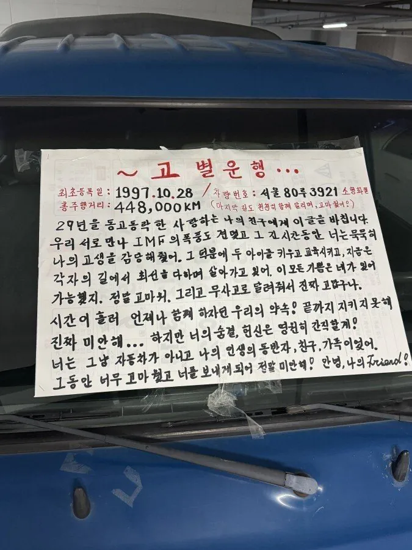

달력 뒤에다가 쓰신 것도 기합이네
44만 무사고는 엄청나네…
29년 운행이면 44만이아니라 한두바퀴 꺾은거 아닐까
대충 지구 둘레가 4만 km니까 넉넉잡아 10바퀴는 족히 돈...
아니 그 뜻이 아니고 키로수를 꺽는다는 뜻이 차량 키로수를 리셋을 시켰다는 의미로 쓰임
아 미터기 초기화구나
지구 얘기는 있지도 않은데 나 왜 혼자 지구 얘기한거지;;;
보통 백만에서 꺾임
바로 옆에 포터 신차 있다함 ㅋㅋㅋㅋㅋㅋㅋㅋㅋㅋㅋㅋㅋ
옵티머스 은퇴여?
내 카렌스보다 2살 위네 ㄷㄷ 나의 99년식 카렌스도 언젠가 떠나 보낼 날이 오겠지...? 🥲
몇만탐?
대충 고잉메리호 콘
새차를 받으며 ‘크 이게 차지’
Charge 하면서 들박
연식대비 생각보다 키로수는 적네. 울회사트럭 8년?? 정도됐는데 지금 36만인데
단거리 위주로 하셨나봄.
난 만 3년 탔는데 지금 39만 주행함.
그러게 근데 년식으로보면 오래되기도 했고 스틱이면 바꾸는게 맞긴해 ㅎ
이래저래 대단히 고생하셨네
나름 애껴서 적게 타셧네 몃년전에 붕붕이 20년 42만 찍고 폐차했는데
유튜브에서 만물상인가 뭔가 2005년에 산 트럭 폐차시키는 영상 찍었던대
ㄱㅊ 파키스탄 수출되면 부활함
이게 손글씨라니 대단하군..... 폰트같다
그래봐야기계
낭만있어 기계령이 있었다면 작품하나 뚝딱일듯
08년식 베라크루즈는 아직 멀었구나.
솔직히 옆에 신차가 있다 한들
그래도 저 글은 낭만이 맞는거 같음….ㅠㅠ
참으로 고생많으셨소
나 지금 차 9년째 타고있는데 슬슬 동반자의 마음이 생기려함
30년이면 진짜 반려동물급 마음일듯ㅋㅋㅋ
29년 무사고는 ㅇㅈ이지ㅋㅋ
우리아빠 GV80 넘어가면서 10년넘게탄 렉스턴 폐차할때
ㄹㅇ 눈물찔끔 나올뻔했다는데
GV80 출고되니까 생각하나도안난다더라 ㅋㅋ
그렇게 소중하면 말소하고 보관하시는것도 좋을텐데
우선 기계령 퇴치부터 하셔야...
머신스피릿은 존재한다
30년 45만 무사고면 돼지머리 하나쯤 드려도된다

ai네
기간에 비해서 얼마 안탓네
거의 새거임